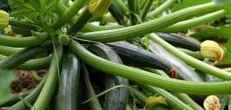
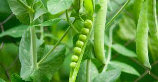

PRODUZIONE 2019
ZUCCHINE

Coltivare in terreno molto ricco di materia organica e non coltivare dopo Solanacee o piante della stessa
famiglia delle Cucurbitacee
- Varietà: Zucchina chiara di Faenza
- Periodo di semina:Marzo / Aprile
- Primo raccolto: Fine Aprile
- Ultimo raccolto: Fine Aprile
- Raccolto
| Dimensione |
Quantità |
| Piccole (10cm) |
16 |
| Medie (11-16cm) |
26 |
| Grandi(>16cm) |
9 |
|
51 |
-->Acquista semi<--
PISELLI

American Wonder: Varietà media precoce come ciclo colturale
Consigli
- Piantare in semenzaio riscaldato
e importante:
- Acquistare vasetti
- Mantenere areato
- Non usare il coperchio del semenzaio
- Non usare mettere il semenzaio vicino al termosifone
- Fissare i sostegni nel terreno non appena le piante raggiungono i 10cm
- Acquistare una rete con spazi di non più di 10cm per garantire sostegni adeguati
-->Acquista semi<--